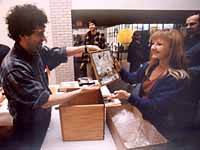

|

The Minnesota Artists Exhibition Program (MAEP)
The MAEP is an artist-controlled exhibition program with a prominent gallery, schedule of exhibitions,
and dedicated professional staff at The Minneapolis Institute of Arts.
This curatorial department
is a true study in democracy. Its exhibitions are selected by a panel
of artists who are elected by and from their peers at an annual meeting of the artist community, held each
fall at the Institute. The process of the MAEP is the result of
collaborative action between the artist community of Minnesota and The Minneapolis Institute of
Arts. Since 1975, the program has been fundamentally committed to the perceptions and evaluations
of artists, and has produced and presented over 130 exhibitions of contemporary art.
The Minnesota Artists Exhibition Program is an artist-run curatorial department of The
Minneapolis Institute of Arts made possible by generous support from the Jerome Foundation.